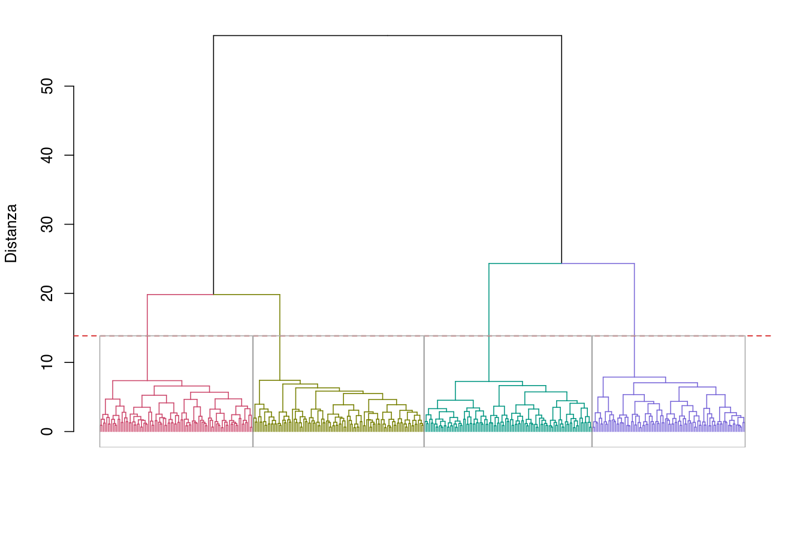
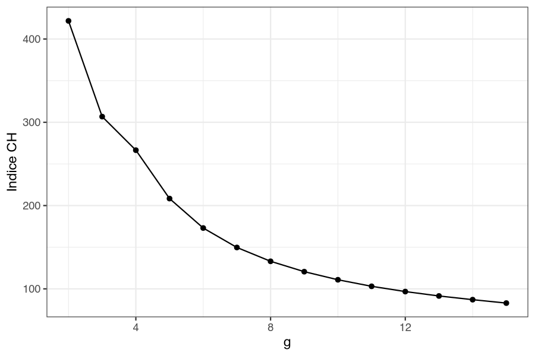
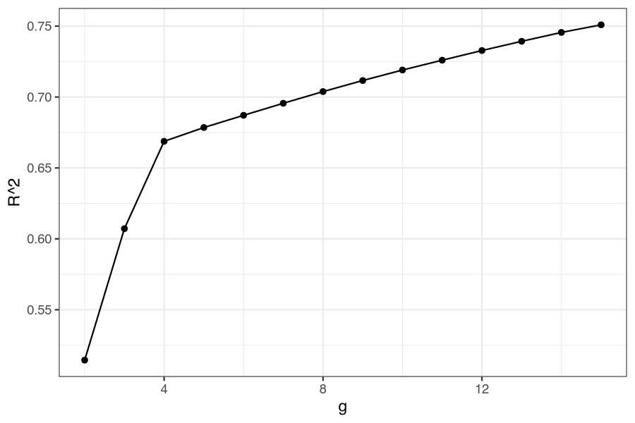

34 Caso studio — Segmentare il mercato: quattro gruppi che l’anagrafica non vede
34.1 La situazione
Un’azienda di largo consumo deve differenziare l’offerta: assortimento, canale di vendita, tono della comunicazione. Per farlo serve sapere in quanti tipi di cliente si divide il mercato e che cosa distingue un tipo dall’altro.
La strada più breve è già disponibile: il sistema di gestione dei clienti (CRM, customer relationship management) conosce età, sesso, reddito e area di ogni cliente, e dividere il mercato in fasce d’età o in quartili di reddito non costa nulla. La domanda di questo caso è se quella strada porti dove serve.
34.2 I dati
Un’indagine su 400 rispondenti con otto item di atteggiamento su scala 1–7 (dal peso della qualità rispetto al prezzo alla preferenza per il negozio fisico), più le consuete variabili socio-demografiche.
Il dataset contiene anche una colonna segmento_vero. In una ricerca reale non esiste: qui c’è perché i dati sono sintetici e i quattro segmenti con cui sono stati generati sono noti. Serve a una cosa sola, ma decisiva — verificare se il metodo ritrova quello che c’è davvero. Durante l’analisi la si tiene fuori, e la si usa solo alla fine.
34.3 Passo 1 — Costruire i gruppi
Menu: Analisi → AnalisiMercato → Cluster Analysis → Cluster Analysis Gerarchica
Base della segmentazione → gli otto item; Standardizza le variabili → attivo; Distanza → Euclidea; Metodo di agglomerazione → Ward; Numero di gruppi → 4; Dendrogramma, R², RMSSTD (deviazione standard media dei gruppi, Root-Mean-Square Standard Deviation), Delta G e Indice CH (indice di Caliński-Harabasz) attivi; Etichetta cluster attivo (aggiunge al dataset la colonna Cluster).
Statistiche generali
| Variabili | Distanza | Metodo di agglomerazione |
|---|---|---|
| 8 | Euclidea | Ward |
Metriche partizioni (estratto)
| g | R² | RMSSTD | Indice CH | Delta G |
|---|---|---|---|---|
| 2 | 0,514 | 0,698 | 421,747 | 32,985 |
| 3 | 0,607 | 0,628 | 306,807 | 4,495 |
| 4 | 0,669 | 0,578 | 266,512 | 11,947 |
| 5 | 0,679 | 0,570 | 208,407 | 0,472 |
| 6 | 0,687 | 0,563 | 173,044 | 0,045 |

34.3.1 La scelta di k non è automatica
Gli indici qui non dicono tutti la stessa cosa, ed è bene vederlo su un caso studio completo invece che su un esempio da manuale in cui tutti concordano.
- L’indice CH ha il massimo a \(g = 2\) e da lì scende: il suo verdetto è due gruppi.
- Il \(\Delta G\) ha il salto più grande a \(g = 2\) (32,99) ma un secondo picco chiaro a \(g = 4\) (11,95), quasi tre volte il valore a 3 e venticinque volte quello a 5.
- L’\(R^2\) guadagna 9,3 punti passando da 2 a 3 gruppi e 6,2 da 3 a 4, poi si ferma: da 4 a 5 guadagna un solo punto. Il gomito è a 4.


Non è una contraddizione: è la struttura dei dati. Esiste una divisione dominante in due macro-gruppi — chi è orientato a marca e qualità (media 5,9 su questi item) contro chi è orientato a prezzo e comodità (media 3,5) — e dentro ciascuna metà esiste una seconda divisione più fine. Il CH confronta ogni partizione con un criterio globale e premia quella dominante; \(\Delta G\) e \(R^2\) vedono anche il secondo livello.
La scelta di \(k = 4\) si regge quindi su tre elementi, non su un indice: il secondo picco di \(\Delta G\), il gomito di \(R^2\) e — non ultima — la domanda aziendale. Due segmenti non permettono di differenziare assortimento e canale: sono già quello che l’azienda sa. Quattro sì.
34.4 Passo 2 — Dare un nome ai gruppi
Menu: Analisi → AnalisiMercato → Cluster Analysis → Caratterizzazione
Si salva la colonna Cluster e la si caratterizza con gli otto item e con le variabili socio-demografiche: Variabile ‘Cluster’ da caratterizzare → Cluster, Descrittori → item + eta, sesso, reddito_k, area, Soglia di significatività (%) → 5.
Relazione tra la variabile ‘Cluster’ e le variabili quantitative
| Correlazione al quadrato | p | |
|---|---|---|
| consegna_a_casa_essenziale | 0,760 | <0,001 |
| preferisco_negozio_fisico | 0,703 | <0,001 |
| marca_conta_molto | 0,663 | <0,001 |
| fedele_alle_marche | 0,661 | <0,001 |
| qualita_prima_di_prezzo | 0,657 | <0,001 |
| compro_online_spesso | 0,650 | <0,001 |
| cerco_sempre_le_offerte | 0,650 | <0,001 |
| made_in_italy_importante | 0,607 | <0,001 |
Il primo risultato è ciò che non compare: eta, reddito_k, sesso e area non superano la soglia e restano fuori dalla tabella. I quattro gruppi non si distinguono per anagrafica.
Il secondo risultato è il profilo di ciascun gruppo, dall’estratto della tabella Descrizione di ciascun ‘Cluster’ tramite le variabili quantitative:
| Cluster | Variabile | Vtest | Media nel cluster | Media generale |
|---|---|---|---|---|
| 1 | cerco_sempre_le_offerte | +7,47 | 6,04 | 5,00 |
| 1 | consegna_a_casa_essenziale | +6,96 | 5,38 | 4,26 |
| 1 | fedele_alle_marche | −11,48 | 2,90 | 4,51 |
| 1 | made_in_italy_importante | −10,82 | 3,50 | 4,85 |
| 2 | preferisco_negozio_fisico | +12,01 | 6,19 | 4,63 |
| 2 | qualita_prima_di_prezzo | +11,54 | 6,27 | 4,72 |
| 2 | cerco_sempre_le_offerte | −15,78 | 2,91 | 5,00 |
| 2 | consegna_a_casa_essenziale | −14,15 | 2,13 | 4,26 |
| 3 | fedele_alle_marche | +10,22 | 5,95 | 4,51 |
| 3 | marca_conta_molto | +8,41 | 5,80 | 4,61 |
| 3 | cerco_sempre_le_offerte | +5,97 | 5,83 | 5,00 |
| 3 | consegna_a_casa_essenziale | −4,59 | 3,53 | 4,26 |
| 4 | compro_online_spesso | +13,98 | 6,04 | 4,15 |
| 4 | consegna_a_casa_essenziale | +11,78 | 6,02 | 4,26 |
| 4 | preferisco_negozio_fisico | −13,05 | 2,94 | 4,63 |
| 4 | qualita_prima_di_prezzo | −12,34 | 3,09 | 4,72 |
| Cluster | \(n\) | Profilo | Nome |
|---|---|---|---|
| 1 | 95 | Caccia alle offerte, vuole la consegna, indifferente a marca e origine | Value-hunter |
| 2 | 104 | Negozio fisico, qualità e made in Italy, rifiuta online e promozioni | Tradizionalisti |
| 3 | 95 | Fedele alle marche e attento all’origine, ma guarda anche le offerte | Premium-seeker |
| 4 | 106 | Compra online, vuole la consegna, prezzo prima della qualità | Convenience |
I due livelli del dendrogramma si leggono ora nei profili: la divisione dominante separa 2 e 3 (marca e qualità) da 1 e 4 (prezzo e comodità); dentro la prima metà la differenza è la sensibilità alle promozioni, dentro la seconda è soprattutto l’acquisto online: frequente per i Convenience, molto meno per i Value-hunter, che però non preferiscono nemmeno il negozio fisico e sono i più attenti alle offerte.
34.5 Passo 3 — I segmenti sono veri, o li ha inventati l’algoritmo?
Menu: Analisi → AnalisiMercato → Cluster Analysis → Confronto partizioni
Una cluster analysis restituisce sempre dei gruppi, anche su dati privi di struttura. Qui si possono confrontare quattro partizioni delle stesse 400 persone: quella trovata (Cluster), quella vera (segmento_vero) e le due anagrafiche costruite per l’occasione — quartili di età e quartili di reddito, che è esattamente ciò che l’azienda avrebbe fatto senza indagine.
Adjusted Rand Index
| Cluster | segmento_vero | fascia_eta | fascia_redd | |
|---|---|---|---|---|
| Cluster | 1,000 | — | — | — |
| segmento_vero | 0,873 | 1,000 | — | — |
| fascia_eta | 0,004 | 0,005 | 1,000 | — |
| fascia_redd | −0,000 | 0,001 | 0,001 | 1,000 |
Lettura. La partizione costruita sugli atteggiamenti e quella vera hanno un ARI di 0,873: praticamente le stesse persone negli stessi gruppi. Le due partizioni anagrafiche hanno un ARI di 0,005 e 0,001 con i segmenti veri, cioè il valore che si otterrebbe accoppiando le persone a caso.
La tabella di contingenza rende la cosa ancora più concreta:
| Cluster trovato | Convenience | Premium-seeker | Tradizionalisti | Value-hunter |
|---|---|---|---|---|
| 1 — Value-hunter | 4 | 0 | 0 | 91 |
| 2 — Tradizionalisti | 0 | 1 | 103 | 0 |
| 3 — Premium-seeker | 0 | 87 | 8 | 0 |
| 4 — Convenience | 99 | 0 | 0 | 7 |
Su 400 rispondenti, 380 sono collocati nel gruppo giusto. I 20 errori restano tutti dentro le due metà del dendrogramma: 11 scambi fra Value-hunter e Convenience (7 + 4), i due profili più simili fra loro, e 9 fra Tradizionalisti e Premium-seeker (8 + 1). Nessun rispondente attraversa la divisione dominante.
34.6 Che cosa ha aggiunto la cluster analysis
Il confronto è fra due modi di segmentare lo stesso mercato.
- Per anagrafica — gratis, immediata, già nel CRM: produce quattro gruppi che con la struttura reale del mercato hanno zero relazione (ARI 0,005). Un’azione di marketing costruita su quei gruppi colpirebbe, dentro ciascuno, persone con atteggiamenti opposti.
- Per atteggiamenti — richiede un’indagine e un’analisi: ricostruisce i segmenti veri con un ARI di 0,873, e li descrive con un profilo su cui si può decidere assortimento, canale e messaggio.
La conclusione scomoda, che va detta nel report, è la seconda faccia di questo risultato: siccome i segmenti non si distinguono per età, reddito, sesso o area, non sono raggiungibili con un targeting anagrafico. Servono variabili comportamentali — storico d’acquisto, canale usato, risposta alle promozioni — oppure un questionario di assegnazione da somministrare ai clienti. Sapere che i segmenti esistono e sapere come raggiungerli sono due problemi distinti, e il secondo non si risolve da solo.
34.7 Le funzioni usate
| Passo | Analisi | Opzioni principali |
|---|---|---|
| Costruire i gruppi | Cluster Analysis Gerarchica | 8 item; standardizzate; Euclidea; Ward; k = 4; dendrogramma; R², RMSSTD, ΔG, CH |
| Salvare l’appartenenza | (stessa analisi) | Etichetta cluster attivo → colonna Cluster |
| Profilare e nominare | Caratterizzazione | target Cluster; descrittori: item + socio-demografiche; soglia 5% |
| Costruire le partizioni di confronto | Dati → Trasforma (jamovi) | quartili di eta e di reddito_k |
| Validare | Confronto partizioni (ARI) | Cluster, segmento_vero, fascia_eta, fascia_redd |
34.8 Da portare nel report
- Item usati per la segmentazione e perché quelli (e non altri).
- Standardizzazione, distanza e metodo di agglomerazione, dichiarati.
- Come è stato scelto \(k\): quali indici, e che cosa si è fatto quando non concordavano.
- Numerosità e profilo di ciascun segmento, con i valori test (v.test) a sostegno del naming.
- Una verifica di tenuta: ARI contro una partizione esterna, oppure — quando non esiste una verità nota — ARI fra le soluzioni ottenute con metodi diversi (§ P-20).
- Se le variabili socio-demografiche non caratterizzano i segmenti, va scritto: cambia le opzioni di targeting.